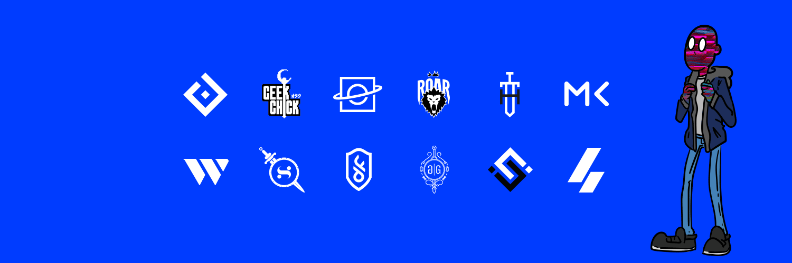
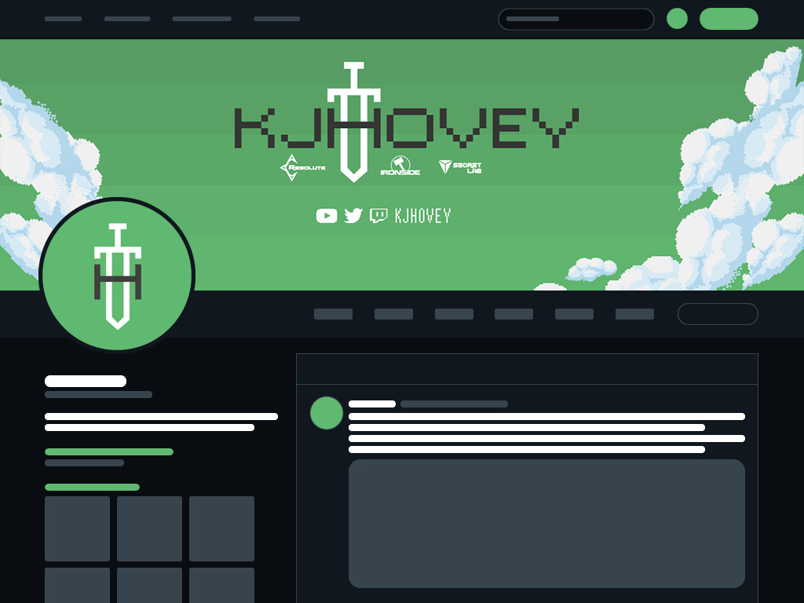
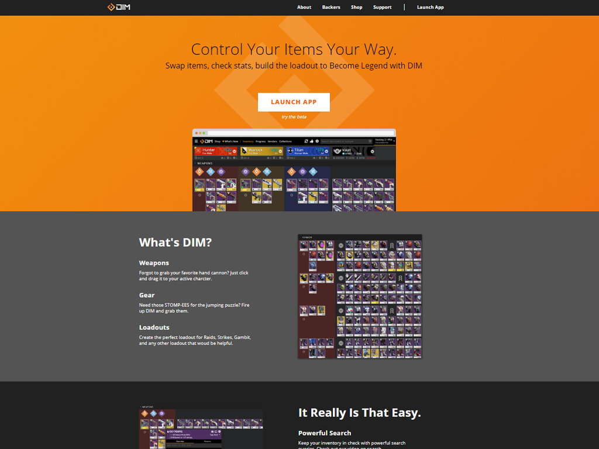
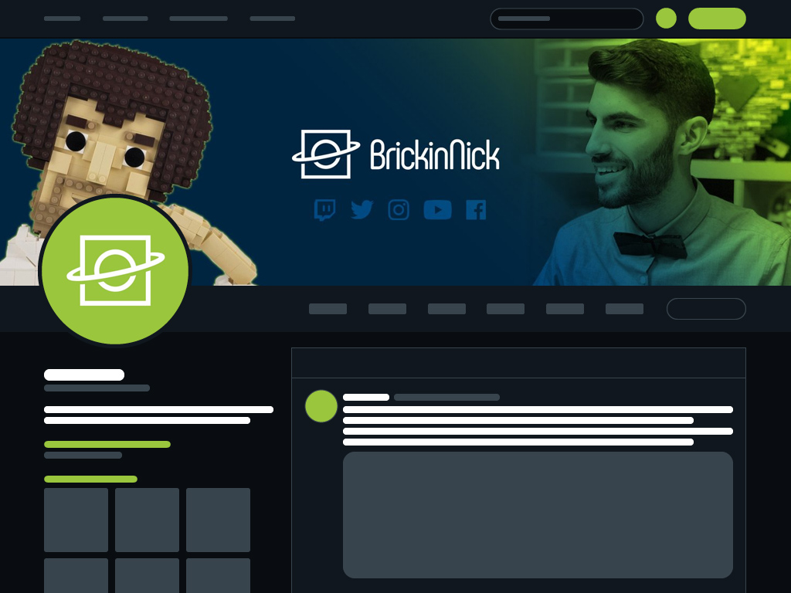
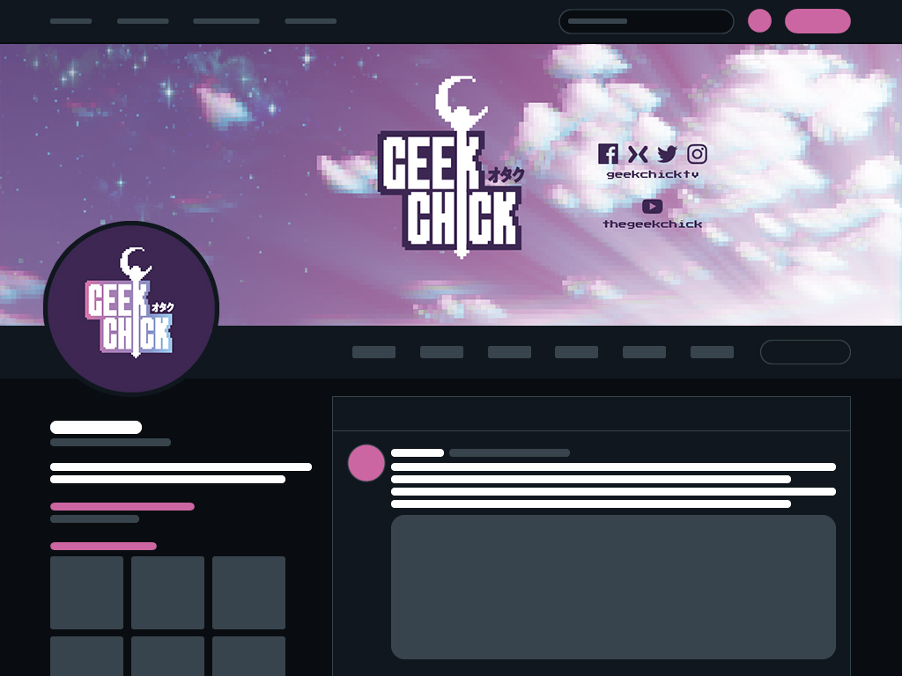

Welcome to Inexorable Design
August 30, 2019

Hey! I'm Ace. I'm a designer and front end developer. I've decided to make my website into a blog! At least, the typical blog format - "a regularly updated website or web page, typically one run by an individual or small group, that is written in an informal or conversational style." I like the idea of posting up my work as I make it and I always find myself wanting to give more context about it. I also really like the idea of dating posts, It'll be cool to see the progression here over time.
Since I have a lot of older work to post, i'm going to make this first entry in the blog a sort of history; images followed by small blurbs about the work. Let's get started!
kjhovey Branding

One of the first branding projects I had the pleasure of working on was for kjhovey, a popular content creator in the Destiny community. I did a custom logo for Hovey that called back to his passion and love for The Legend of Zelda: A Link to the Past. I also created a custom song for the reveal of Hovey's new brand, you can listen below!
Destiny Item Manager Contributor / Designer

Working on Destiny Item Manager (DIM) has been a blast and an honor. I started my journey with DIM when I was approached to design a new logo for the project so it could stand on it's own without using any of the Destiny intellectual property (IP). We worked together to make something that evoked both the application itself as well as Destiny. After that I stuck around and currently help with contributing code where I can as well as continuing my role in aiding with design needs.
BrickinNick Branding

BrickinNick is a LEGO content creator! Nick makes amazing custom LEGO builds, so we worked together to create a brand that would echo his LEGO building prowess and his love of space LEGO sets.
Geek Chick Branding

Geek came to me with a very specific motif for her new logo, Pixels, RPGs, and Magical Girls. We worked on capturing that esthetic along with her already signature vapor wave style. I also created a custom chip tune track for this brand you can listen below!